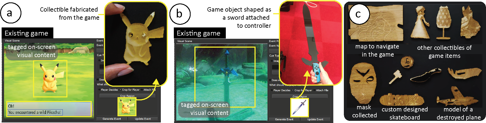

Publication
Dishita Turakhia, Harrison Mitchell Allen, Kayla DesPortes, Stefanie Mueller.
FabO: Integrating Fabrication with a Player's Gameplay in Existing Digital Games
In Proceedings of
Creativity and Cognition ’21.
DOI PDF Video
DOI PDF Video
1 / 44

2 / 44

3 / 44

4 / 44

5 / 44

6 / 44

7 / 44

8 / 44

9 / 44

10 / 44

11 / 44

12 / 44

13 / 44

14 / 44

15 / 44

16 / 44

17 / 44

18 / 44

19 / 44

20 / 44

21 / 44

22 / 44

23 / 44

24 / 44

25 / 44

26 / 44

27 / 44

28 / 44

29 / 44

30 / 44

31 / 44

32 / 44

33 / 44

34 / 44

35 / 44

36 / 44

37 / 44

38 / 44

39 / 44

40 / 44

41 / 44

42 / 44

43 / 44

44 / 44

FabO: Integrating Fabrication with a Player's Gameplay in Existing Digital Games

Figure 1. FabO allows designers to integrate fabrication with existing digital games. When players play these integrated games, FabO generates fabrication files of objects from their gameplay that can be used as (a) collectibles, such as a Pokemon from the game Pokemon Lets Go, or (b) custom game controllers, such as a sword-shaped controller from the Legend of Zelda game. (c) Examples of fabricated objects from our user study, wherein the participants integrated fabrication with existing games of their choice.
Fabricating objects from a player's gameplay, for example, collectibles of valuable game items, or custom game controllers shaped from game objects, expands ways to engage with digital games. Researchers currently create such integrated fabrication games from scratch, which is time-consuming and misses the potential of integrating fabrication with the myriad existing games. Integrating fabrication with the real-time gameplay of existing games, however, is challenging without access to the source files.
To address this challenge, we present a framework that uses on-screen visual content to integrate fabrication with existing digital games. To implement this framework, we built the FabO toolkit, in which (1) designers use the FabO designer interface to choose the gameplay moments for fabrication and tag the associated on-screen visual cues; (2) players then use the FabO player interface which monitors their gameplay, identifies these cues and auto-generates the fabrication files for the game objects. Results from our two user studies show that FabO supported in integrating fabrication with diverse games while augmenting players' experience. We discuss insights from our studies on choosing suitable on-screen visual content and gameplay moments for seamless integration of fabrication.
Introduction
Fabricating physical objects from a player's digital gameplay expands a player's engagement with the game. Creative examples of integrating fabrication with gameplay include fabricating collectibles of valuable game items to augment the game's digital assets, custom game controllers shaped as game objects to improve the player's interactive experience, and fabricating game objects at chosen gameplay moments to learn fabrication skills.
One way to currently integrate fabrication with gameplay is by creating such games from scratch. Because creating games from scratch can be time-consuming, researchers have proposed modifying existing games with added functionalities. However, modifying existing games requires access to the games' source files. Thus, while these approaches allow for tight integration of fabrication with games, they do not generalize across the large pool of existing games.
To tap the potential of myriad existing games for fabrication, we present a framework that uses on-screen content instead of accessing source files to integrate fabrication with the games. In this framework, designers choose significant gameplay moments and tag the on-screen visual cues using our system. When players play this game, our system monitors their gameplay and scans for the tagged cues. Once identified, our system extracts objects from on-screen visual content and generates fabrication files. In this way, our framework allows designers to integrate fabrication with existing games without accessing the source files that contain information on the player's gameplay, and the asset repository that contains information for generating the fabrication files.
To implement our framework with the above workflow, we developed the FabO toolkit, which consists of a designer interface and a player interface. Consider the example of integrating fabrication with the game Pokemon Lets Go in which every time players capture a Pokemon, they can fabricate a collectible of that Pokemon. To embed such a fabrication event, designers use the FabO designer interface to tag the on-screen text `You have encountered a' because the same text appears on-screen every time players capture a Pokemon. When players play the game, the FabO player interface monitors their screen, identifies the tagged text cue, and auto-generates the fabrication files for the captured Pokemons using object extraction. Players can fabricate their collectible, for example, a Pikachu memento shown in Figure 1a.
We ran two user studies to evaluate (1) the performance and usability of the FabO toolkit for integrating fabrication with various existing games, and (2) the experience of fabricating objects from gameplay. In the first study, 12 participants used the FabO designer interface to integrate fabrication events within the games of their choice. In the second study, 12 participants played a collectible game with integrated fabrication events and used the FabO player interface to fabricate objects from their gameplay. Our user studies' results and the participants' feedback from the post-study interviews show that FabO can successfully generalize across various games. Based on our studies' findings, we discuss insights on how to choose suitable on-screen visual content and gameplay moments for integrating fabrication with existing games.
In summary, we contribute:
- A framework to augment existing games by allowing fabrication of objects from the gameplay using on-screen visual content.
- A toolkit that implements our framework through a designer interface for tagging on-screen visual content and a player interface for extracting fabrication files from on-screen visual content.
- Insights from our two user studies, on choosing the suitable on-screen visual content and gameplay moments for successful integration of fabrication with existing games.
FABO
In this section, we first explain our framework and how it uses on-screen visual content to support integrating fabrication with existing games. We then demonstrate the implementation of this framework via the FabO toolkit.
Framework
We developed a framework that allows designers to use on-screen visual content to integrate fabrication with games, and the players to fabricate objects from their gameplay. As shown in Figure 2, our framework takes existing games as input and outputs fabrication files of game-objects. To achieve this, designers use our system to choose gameplay moments as fabrication events by tagging visual content as cues, such as text or images. Designers can also tag on-screen regions to extract game objects for fabrication. Using our system, the designers then export all the fabrication events in a single file. Players load this events file while playing the game. Our system then monitors their gameplay, searches for cues of the tagged events and outputs the fabrication files of the game objects.
Figure 2. FabO's framework uses on-screen visual content to (1) allow designers to integrate fabrication with existing games and (2) auto-generate the fabrication files to allow players to fabricate objects from their gameplay.
Extracting information on player's gameplay without access to the source code:
Information on a player's gameplay, such as when they encounter significant moments in the game, can be extracted from the on-screen visual content via computer vision. Such moments are typically accompanied by visual content, such as a congratulatory message or image. For example, in the game Pokemon Lets Go, when players capture a Pikachu, the text message 'You have caught a Pikachu' appears on the screen. Using computer vision to monitor and match such cues allows us to extract information that the player acquired a game object in their gameplay. Furthermore, visual content of such gameplay moments can be easily sourced from online recorded gameplay videos or by recording their own gameplay.
Generating fabrication files from the gameplay without access to the game's assets:
Fabrication files can be generated during the gameplay by using object extraction on the on-screen visual content via computer vision. For example, by extracting the outline of the image of Pikachu that appears on-screen in the game Pokemon Lets Go, we can generate its SVG file during a player's gameplay. The players can use this fabrication file to laser cut a Pikachu collectible. Alternatively, the players can mark on-screen objects for generating their fabrication files. If the object intended for fabrication is unavailable on-screen, our system allows linking a custom fabrication file that is released when players encounter that fabrication event.
FabO Toolkit
We developed a framework that allows designers to use on-screen visual content to integrate fabrication with games, and the players to fabricate objects from their gameplay. As shown in Figure 3, our framework takes existing games as input and outputs fabrication files of game-objects. To achieve this, designers use our system to choose gameplay moments as fabrication events by tagging visual content as cues, such as text or images. Designers can also tag on-screen regions to extract game objects for fabrication. Using our system, the designers then export all the fabrication events in a single file. Players load this events file while playing the game. Our system then monitors their gameplay, searches for cues of the tagged events and outputs the fabrication files of the game objects.
Designer Interface:
The first step for designers is to select an existing game, for example, we selected Pokemon Lets Go. The next step is to choose the gameplay moments to integrate with fabrication. We choose the moments when the players capture Pokemons as the fabrication events so they can fabricate a collectible of their Pokemons.

Figure 3. To integrate fabrication events, designers use FabO's designer interface to (a) capture the screenshot of the gameplay moment (b) tag the on-screen visual content as cues, such as text or images, (c) set event properties, and (d) choose option for object fabrication.
To locate such gameplay moments, designers can either use videos of recorded gameplay from video platforms, such as Youtube, or play the game themselves. In our case, we located the Pokemon capturing moment from a gameplay video sourced from Youtube. Designers then use the 'take a new screenshot' feature to import the chosen gameplay moments into FabO's designer interface. For instance, Figure 3 shows the screenshot of our chosen gameplay moment of a player capturing a Pikachu imported into FabO's designer interface.
The next step is for designers to tag on-screen visual cues, such as text or images associated with that gameplay moment. For instance, Figure 5b shows our tagged text cue of 'You have encountered a'. We tag this cue because it allows us to create fabrication events for any Pokemon and not just a Pikachu. Alternatively, to limit our fabrication to only Pikachu, we can tag the image of Pikachu's character as a cue. Based on their preference, designers can set if the fabrication event should trigger just once or repeat every time the player encounters it. In our case, we choose to repeat the event to allow for the fabrication of Pokemons every time a player catches one (Figure 3c).
The next step for designers is to define the object for fabrication by choosing one of the three options from the designer interface: (1) specifying the on-screen area where the object appears, (2) providing a custom object's fabrication files, or (3) letting the players determine the object from the visual scene. We specify the on-screen area where Pikachu appears as it allows us to generalize for all the Pokemons that appear in that area (Figure 5d). We then save this fabrication event with its properties. The event can be modified later if needed.
After creating all the events, designers finally export the 'Fabrication Events' file which references all the fabrication events with their screenshots, the tagged events, marked regions, and choice of object's fabrication.
Player Interface:
Before playing the respective game, players load the exported 'Fabrication Events' file into the player interface. While playing, the player interface monitors a player's screen, scans for tagged cues, and identifies fabrication events. Once identified, the player interface notifies players with a prompt message. At this point, players can either continue playing or pause the game to fabricate the object from the fabrication event using the player interface (Figure 4a). Based on the setting for the object's fabrication, the player interface either (1) automatically extracts the object's outline from the on-screen region, or (2) loads the pre-linked external fabrication file, or (3) allows players to choose an object for fabrication by marking an area on-screen.

Figure 4. FabO's player interface monitors players' screens during the gameplay, and when they encounter a fabrication event, (a) it extracts the tagged object for fabrication from the screenshot of the event (b) allows players to refine the extracted outline and generate fabrication files that (c) players can use with laser cutters and paper cutters to fabricate the object, for example a collectible of Pikachu from the game Pokemon Lets Go.
Additional Features:
In addition to the above workflow, the FabO toolkit also supports functionalities, such as sequencing the fabrication events, previewing the frequency of events, and referencing game-controller outlines within fabrication files.
Designers can decide the sequence of fabrication events, such that only when a certain fabrication event has occurred, the subsequent events are unlocked. This feature allows designers to impose linearity in the fabrication of objects during the gameplay (Figure 5a). To support designers with estimating the frequency of their embedded events, the preview feature allows them to check when and how often the embedded events occur in a gameplay video by scanning the source video for tagged cues and highlighting them on the video timeline (Figure 5b). To expand the use of objects extracted from the games that use game-controllers, the player interface has a library of outlines of standard game controllers that players can overlay on their fabrication files. For example, an outline of the game controller Nintendo Switch can be combined with the outline of a sword extracted from an on-screen game object to make a personalized sword-shaped game controller for the game The Legend of Zelda (Figure 5c).
Figure 5. FabO allows (a) sequencing of events in a desired order to impose linearity (b) auto-scanning gameplay videos to check the frequency of the embedded events (c) inserting game-controller outlines to fit them within fabricated objects, such as a sword from the game the Legend of Zelda.
USER STUDY 1 - Evaluating FabO for Integrating Fabrication with Existing Games
In the first user study, we examined FabO's workflow and user's experience for integrating fabrication events within various existing digital games. Insights from the study allowed us to determine how designers can choose (1) suitable visual content for FabO's workflow and (2) suitable gameplay moments for seamless integration of fabrication within the gameplay.
Study Design
We recruited 12 participants from our institution (6f, 5m, 1n/b) aged between 20-29 years (M=24, STD.=2.82) and with varied experience of playing digital games (10+ yrs to never playing games). We conducted the 60min study remotely over a video call (Zoom). The participants used the FabO toolkit on our computer via Zoom's remote control.
Before the study, we asked the participants to choose up to 3 existing digital games, gameplay moments within those games to embed fabrication events, and associated game objects for fabrication. They could source these gameplay moments either from their own gameplay or from online videos. During the study, we first demonstrated the FabO workflow using the game Pokemon Lets Go. The participants then used the FabO designer interface and their sourced videos to tag as many gameplay moments and associated objects for fabrication as they preferred using text and image cues. They then tested if the FabO player interface successfully detected their embedded fabrication events. Finally, we gathered their feedback through semi-structured interviews and a post-study feedback form.
Study Results
Altogether, the 12 participants attempted to integrate fabrication with 35 existing digital games (2-3 games per participant) across 9 genres by tagging 47 events (1-2 events per game). We tested the success of the fabrication events across three conditions: (1) were the participants able to tag on-screen visual content of their chosen gameplay moment, (2) did FabO identify those moments by scanning for the visual cues, and (3) did FabO generate a fabrication file of a game object for laser cutting. If all three conditions were met, we counted an event as a successful fabrication event.
Figure 6. (a) User study participants tested 35 games (24 successful) across 9 genres. (b) Fabricated game-objects using FabO.
From the 35 games attempted shown in Figure 6a: (1) the participants were able to tag on-screen content for 33 games (94.29%). In 2 games, they struggled to identify a discrete moment to tag a text or image cue for integration. (2) Within the 33 tagged games, participants tagged 47 events - 15 using text cues and 32 using image cues. Of these 47 tagged events, FabO detected 35 events (74.47%) - 12/15 text cues (80%) and 23/32 image cues (71.19%). In total 24 games had successfully detected events. (3) For the 35 detected events, FabO successfully auto-extracted the fabrication files for all game objects as marked by the participants. Thus, in total, the participants successfully integrated fabrication in 24 out of 35 games (68.57%) across all three conditions. Figure 6b shows the objects that we fabricated from the generated files. These objects ranged from commemorative trophies and collectibles to supportive gameplay tools, such as maps.
Study Insights
We studied the successful and failed examples of fabrication events from the study to gain the following insights on choosing suitable visual content and gameplay moments:
#1 Choosing suitable visual content:
When tagging an event, the designer has to find a text or image cue on screen that indicates that the event occurred. While most games offer such discrete cues through text messages or images, some games are continuous and do not contain such cues. An example of a game with a discrete cue is the game Prof. Layton [p2] (Figure 7a), in which a text message appears on-screen when players acquire a coin, thus indicating that the event occurred. However, in the 2 games for which participants failed to integrate fabrication events, i.e., Unrailed [p4] (Figure 7a) and Parkitect [p5], the gameplay was continuous with no discrete cues to indicate event occurrence, i.e., the players built a track and a park continuously, thereby making it difficult to select a discrete moment.
Figure 7. Examples from user study where FabO (a) successfully detected the text cues (that had legible text), (b) failed to detect text cues (that were pixelated) (c) onscreen text was tagged as image cue because of the font.
Another important consideration in choosing the visual content is to select cues detectable using computer vision, i.e., extractable font and images with a high contrast background (Figure 7b, c). If the font was too thick, artistic or low-res (Figure 7b-bottom), the text extraction was faulty. Similarly, if the background was too noisy (Figure 7c-bottom), the image cue detection was slow and faulty. To increase the detection speed, some participants used a smaller area with less background noise for monitoring and FabO successfully detected the events.
Finally, to fabricate objects from visual content, it is essential to have them present on-screen at the moment selected for fabrication. When the objects were not visually present on-screen, participants linked external files with the event. However, one participant [p6] addressed this constraint by using FabO's sequencing feature for the game Final Fantasy, by using one fabrication event to trigger another event, wherein the fabrication object was on-screen.
#2 Choosing gameplay moments suitable for seamlessly integrating with fabrication:
When analyzing the successfully embedded fabrication events from the study, we observed that the timing of integration within the gameplay was crucial. We noted that fabrication was integrated either at the start (7/47 events, 15%), during the gameplay when there are natural pauses (31/47 events, 66%), or at the end of the gameplay (9/47 events, 19%) when the player can shift focus to fabrication.
Figure 8. User study #1 examples of gameplay moments when fabrication was integrated at the start, during, or end of the gameplay. [(e): fabrication event, and (o): fabrication object.]
Examples of embedded fabrication events at the start of the gameplay included moments when the player created new objects, such as a dress (Animal Crossing, Figure 8-1), customized game-objects, such as their skateboard (Tony Hawk, Figure 8-2), or received support objects, such as a map (World of Tanks, Figure 8-3). Examples of embedded fabrication events during the gameplay included moments of natural pauses, either because the game paused the playing or the player paused their gameplay voluntarily. Examples of gameplay pauses included moments, such as unlocking characters (Mario Kart, Figure 8-4) or powers (Gris, Figure 8-6), and destroying characters or objects. Examples of player-based pauses included players updating (Skyrim, Figure 8-7) or accessing their inventory (Minecraft, Figure 8-8), referencing support objects, such as maps, accessing scorecards or stat cards, and socially interacting with game characters (Ori and the Blind Forest, Figure 8-9). Because "these are natural pauses" [p9] when players were not concentrating on playing the game, participants chose these moments as suitable for introducing them to a fabrication activity. Examples of embedded fabrication moments at the end of the gameplay included moments when the players completed building, such as a house (Sims, Figure 8-11), or had won the game (Grand Tourismo Sport, Figure 8-12).
In summary, we observed that participants were mindful of the gameplay timing while integrating fabrication within it, such that it would not distract or interrupt the players while playing.
While these examples cover the various games that the participants explored, our study does not cover the full design space of existing games. Thus, more extended studies are needed to understand how to choose suitable visual content and gameplay moments for integrating fabrication with existing games while also augmenting the player's experience.
USER STUDY 2 - Evaluating the Player Experience during Gameplay
In the second user study, we examined player's experience of playing an existing digital game integrated with fabrication events, and then fabricating objects from their gameplay using FabO.
Study Design
For the study, we selected the game Pokemon Planet because it has a short gameplay and an open-ended story line. Using FabO, we embedded fabrication events that corresponded to when players received either a Pokeball or captured a Pokemon. We recruited 12 new participants from our institution (8f, 4m) aged between 17-28 years (M=22.75, STD.=4) with varied experience of playing games from few times a month to everyday. We conducted the 30min study per participant remotely over Zoom, where they played the game for 15 mins on our computer via Zoom's remote control. We did not brief the participants about the FabO system and simply asked them to play the game as they normally would on their own. When they encountered a fabrication event in the game, FabO notified them with a text prompt. At this point, they could either continue playing or pause the game to fabricate the object. For fabrication, the participants first reviewed the auto-generated fabrication files in the FabO player interface and then fabricated the objects, such as Pokeballs and their captured Pokemons using a remote paper-plotter via Zoom's remote control feature, and watched their objects get fabricated over the video call. We then collected feedback on their experience in a semi-structured interview and a post-study feedback form.
Figure 8. (a) User study participants tested 35 games (24 successful) across 9 genres. (b) Fabricated game-objects using FabO.
Participant Feedback
Fabrication of Objects was Meaningful: 11 out of 12 (91.6%) participants found the ability to have physical versions of digital objects from their gameplay meaningful. For example, p4 said "There are many times during a game where I [have] thought it would be amazing to have a physical version of the equipment" and p7 said "I think it can be nice to build collections and to hold pride about."" However, p8 highlighted the need for closely integrating fabrication - "The main risk of the modified game is for the fabrication event to feel out of place."" Some participants also recommended using the system for educational purposes. For example p12 said "As an educational tool, especially for getting kids excited about fabrication, I can see it being really empowering and engaging while teaching really valuable skills in STEM."
Choice of Objects for Fabrication: When asked if they preferred to choose which objects to fabricate and when to fabricate them, 7 out of 12 (58%) participants wanted to choose themselves. For example, p3 said "I would love to see players given the opportunity to design and embed their own events as well - to trade in games". In contrast, 5 participants preferred the experience designed by someone else because it builds anticipation. For example, p10 said "the anticipation of fabricating pokemon in real life encourages me to keep playing the game to discover new pokemon...so I can make more collectibles. The excitement and anticipation of playing the game and fabrication game items builds on each other." In addition, p4 said "randomizing the fabrication events rather than having them be predictable is fun!"
Timing of Fabrication Events: 7 out of 12 (58%) participants found the idea of fabricating objects during their gameplay enjoyable. From the other 5 participants, 3 stated that they preferred to fabricate the objects after the gameplay and not while playing the game as it halted their gameplay. For example, p2 said "depending on the pace of gameplay, e.g., on a mission or adventure, it may feel distracting to keep having to switch out of the game to fabricate." and p12 said "perhaps pausing [the] game to make fab files print-ready was a bit intrusive and detracted a bit from gameplay."
Study Insights
We thus observed that from the player's perspective, it was important that the fabrication does not hinder the gameplay and is integrated meaningfully for a definite purpose. If integrated well, our study participants' feedback shows that it may increase player's motivation, excitement, and engagement with the game without distracting their gameplay.
DISCUSSION
Visual Cues Required: Because our framework uses on-screen visual content, we cannot extract information from moments that either (1) do not have distinct visual cues or (2) that have non-visual cues, for example sound. To address the first limitation, we can explore if machine learning techniques can be used to automatically identify significant moments and auto-label fabrication objects. For the second limitation, we can expand our system to tag and identify audio cues to include events that may not have distinct visual cues.
Trade-off in detection speed and object fidelity: Because analyzing visual content during the gameplay requires significant computation power, the speed of detection is dependent on the player's screen resolution and the processing power of their computers. While reducing the screen resolution may improve detection speed, it reduces the fabrication files fidelity. This trade-off in performance speed and fabrication files fidelity can be addressed by using more efficient algorithms for object detection.
2D fabrication Only: Because we use 2D object extraction techniques for generating files, the resulting fabrication files are for 2D fabrication only. However, 3D fabrication, such as 3D printing, can also be integrated with gameplay using our framework by linking custom STL files of 3D objects to the fabrication events. For future versions of our system, we can generate 3D models from 2D visual content by (1) mapping 2D images to 3D models repositories, or (2) reconstructing the 3D geometry from 2D images through advanced graphics techniques, such as multi-view object construction.
Extending the use of the fabricated objects in games: While incorporating the fabricated objects back into the game's mechanics is beyond the scope of our current work, it is an avenue for future work. Toolkits like \textit{Nintendo LABO} already incorporate objects fabricated from 2D materials within games for immersive gameplay. By fabricating tangible objects and configuring them to influence the gameplay can integrate the loop of play and fabrication more tightly.
Educational and social maker-games: The design of our framework also allows for applications in educational and social maker games. For instance, an educator can use the sequencing feature of our toolkit to embed increasingly difficult fabrication activities for their students. Similarly, in a social setting with multiple users, every user can use the designer interface to design unique fabrication events within the game or add to each others' fabrication events. The users can then play each others' unique versions or the combined version, encounter the unique fabrication events and fabricate objects, thereby creating novel social interactions using gaming and fabrication.
CONCLUSION
In conclusion, we showed that fabricating objects from player's gameplay, such as collectibles, can be accomplished using our FabO framework, which allows designers to use on-screen content instead of source files for integration and auto-generation of fabrication files. We implemented our framework in the FabO toolkit and demonstrated FabO's workflow that uses computer vision for tagging on-screen visual cues for embedding events and extracting on-screen objects for fabrication. Through two user studies, we showed that FabO successfully allowed the participants to integrate fabrication with a wide variety of existing games to augment player's experience. We discussed the insights from our studies for choosing suitable on-screen visual content and gameplay moments for seamlessly integrating fabrication with the myriad existing games, thereby tapping their potential to expand players' engagement through fabrication.
ACKNOWLEDGMENTS
We thank Supramaya Prasad and Joshua Verdejo for their input in the project. We thank the MIT Learning Initiative and the MIT.nano NCSoft innovations in gaming technology initiative for partial funding of this research. This work is also supported by the National Science Foundation under Grant No. 2008116.